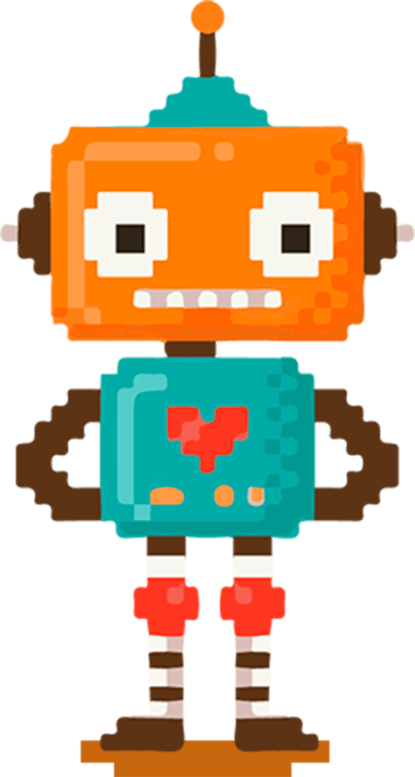

Добро пожаловать в мир Scratch и WeDo 2.0! 
Этот сайт создан для школьников начальных классов, чтобы познакомить их с программированием роботов. Здесь вы найдете:
- Справочник по блокам Scratch 3;
- Описание возможностей WeDo 2.0;
- Инструкции и полезные материалы для создания своих роботов.
Справочник по блокам Scratch 3
Здесь вы найдете описание всех блоков, которые используются для программирования роботов.
Scratch 3 — это идеальный инструмент для тех, кто хочет начать свой путь в программировании и робототехнике. Вы сможете создавать увлекательные проекты и исследовать мир цифровых технологий с весельем и воображением!
О WeDo 2.0

WeDo 2.0 — это набор для изучения робототехники, который объединяет творческие задания, конструирование и программирование. С помощью интуитивного интерфейса и ярких деталей дети могут научиться:
- Собирать и программировать простые роботы;
- Понимать основы механики и сенсорных систем;
- Создавать собственные проекты, исследуя окружающий мир.
Платформа предназначена для детей от 6 лет и помогает развивать навыки STEM (наука, технологии, инженерия и математика). WeDo 2.0 делает обучение увлекательным, открывая путь в мир технологий через игру!